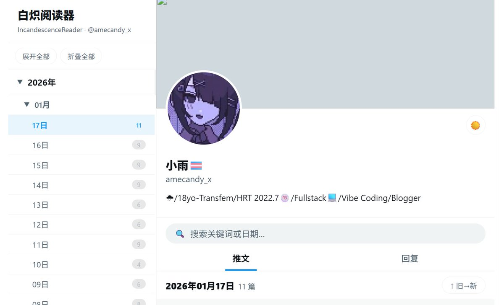

凜冬2.0
@lindong2200
@GptRainy 快点回fo我

小雨（疯狂互fo版）
@GptRainy
我的推文存档上线啦！😇codex好好用
被封了真的好可惜，不过保留了2026.1.17之前的帖子算是安慰
👇访问
https://t.co/9y7WEbhEuP
项目地址：https://t.co/NFKQp17Y5M
使用：https://t.co/jrz26iJXar
愿世间再无痛苦，唯爱永不独行
炽烈已极🔥 https://t.co/jagfC2AvEr